Cómo conectar Facebook e Instagram con la app, paso a paso¶
Guía para alguien que nunca usó Facebook para negocios. Vas despacio, un paso a la vez y mirando las fotos. Si una pantalla no se parece a la foto, no toques nada y pide ayuda.
En las fotos, los nombres, correos y números son de ejemplo. La app de las fotos se llama "GVZLA Agencia"; la tuya tendrá el nombre que elijas.
Antes de empezar¶
Qué vas a lograr: que la app vea tus negocios, páginas, Instagram, cuentas de anuncios y píxeles de Facebook, todo ordenado en una pantalla. Más adelante, la misma conexión va a servir para publicar en tus páginas.
Qué necesitas: - Una computadora con internet. - Un correo electrónico que uses (por ejemplo, Gmail). - Tu celular a mano (Facebook te manda códigos por mensaje). - Más o menos una hora, sin apuro.
Tres palabras que vas a ver mucho:
| Palabra | Qué quiere decir |
|---|---|
| Portfolio comercial (o BM) | La "oficina" de tu negocio dentro de Facebook. Ahí viven tus páginas, cuentas de anuncios y píxeles. |
| App | La "puerta" por la que nuestra herramienta entra a tu Facebook, con tu permiso. |
| Permiso | Lo que la app puede hacer. En esta guía, solo mirar: no cambia ni publica nada. |
Parte 1. Tu cuenta de Facebook¶
Si ya tienes Facebook, salta a la Parte 2.
- Entra a facebook.com y toca "Crear cuenta nueva".
- Escribe tu nombre y apellido reales, tu fecha de nacimiento y tu correo o celular.
- Inventa una contraseña fuerte y anótala en un lugar seguro.
- Facebook te manda un código al correo o al celular: escríbelo.
- Pon una foto tuya de perfil.
Importante: - Usa siempre tu nombre real. Facebook cierra las cuentas con nombres inventados, y con ellas todo lo que cuelga de ellas. - Una persona, una cuenta. No crees cuentas de más. - Activa la verificación en dos pasos (Configuración → Centro de cuentas → Contraseña y seguridad). Así nadie entra aunque sepa tu contraseña.
Parte 2. Tu portfolio comercial (la "oficina" de tu negocio)¶
- Entra a business.facebook.com con tu cuenta de Facebook.
- Arriba a la izquierda toca el nombre del portfolio. Si todavía no tienes uno, Facebook te ofrece crearlo directamente.
- Toca "Crear un portfolio comercial".
- Escribe el nombre de tu negocio (por ejemplo, "Mi Agencia"), tu nombre y tu correo.
- Toca Crear.
Así se ve el portfolio ya creado:
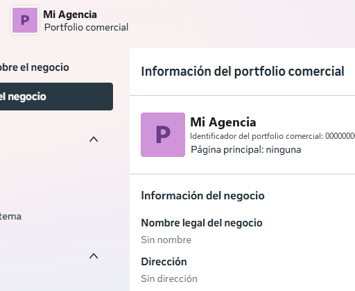
Consejo: si vas a trabajar con clientes, usa un portfolio solo para eso, aparte del de tu negocio principal. Si algún día pasa algo con un cliente, tu negocio principal no se toca.
Parte 3. Hacerte "desarrollador" (una sola vez)¶
Suena difícil, pero es solo registrarte para poder crear la app.
- Entra a developers.facebook.com con tu cuenta de Facebook.
- Arriba a la derecha toca "Empezar" (o "Get started").
- Acepta las condiciones, confirma tu correo y tu celular (te llega un código).
- Cuando te pregunte qué haces, elige la opción que más se parezca (por ejemplo, "Desarrollador").
Al terminar ves la pantalla "Apps".
Parte 4. Crear la app¶
Paso 4.1. En la pantalla "Apps" toca el botón verde "Crear app".
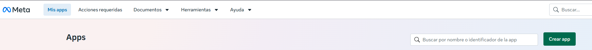
Paso 4.2. Puede aparecer un aviso que dice "Hay una nueva manera de crear apps". Toca "Crear app".
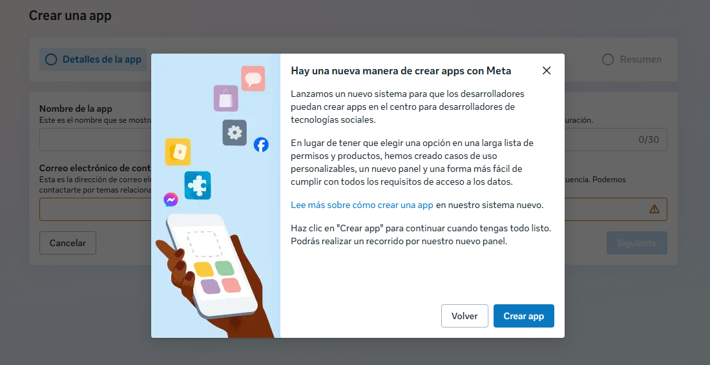
Paso 4.3. Escribe el nombre de la app (por ejemplo, el de tu negocio; no puede decir "Facebook" ni "Meta") y tu correo. Toca Siguiente.
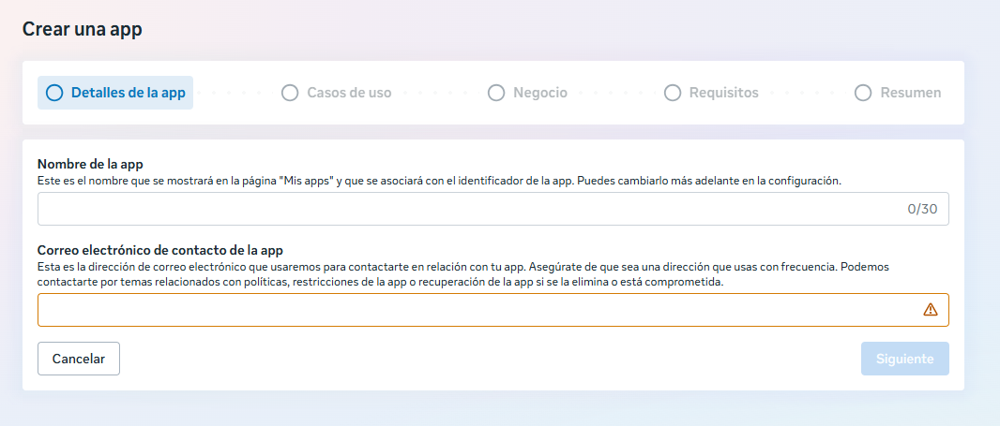
Paso 4.4. Ahora te pregunta para qué es la app ("Casos de uso"). A la izquierda toca "Administración de contenido". Marca solo dos: - "Administrar mensajes y contenido en Instagram" - "Administrar todos los aspectos de tu página"
No marques las otras: cuantas más marques, más cosas te pide revisar Meta. Toca Siguiente.
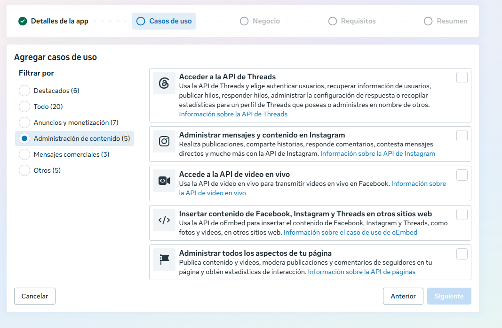
Paso 4.5. Elige el portfolio comercial de la Parte 2 (en la foto, "Mi Agencia"). Toca Siguiente.
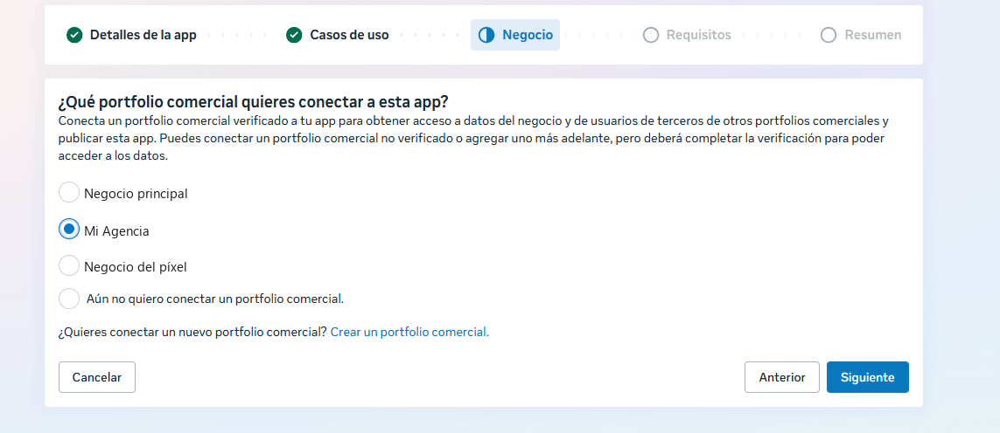
Paso 4.6. Si dice "No se identificaron requisitos", perfecto. Toca Siguiente.
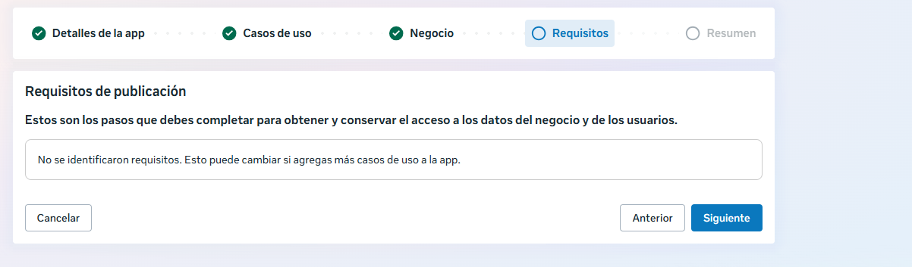
Paso 4.7. Revisa el resumen y toca "Crear app". Puede pedirte tu contraseña de Facebook.
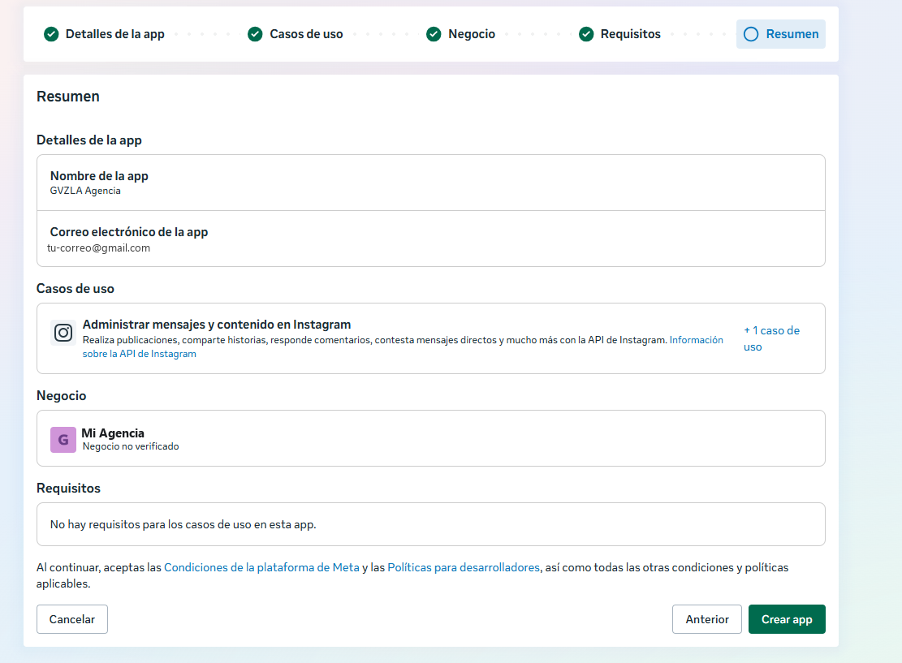
Paso 4.8. ¡Listo, la app existe! Ves su Panel. Lo de "Conviértete en proveedor de tecnología" es para trabajar con clientes más adelante: no lo toques por ahora.
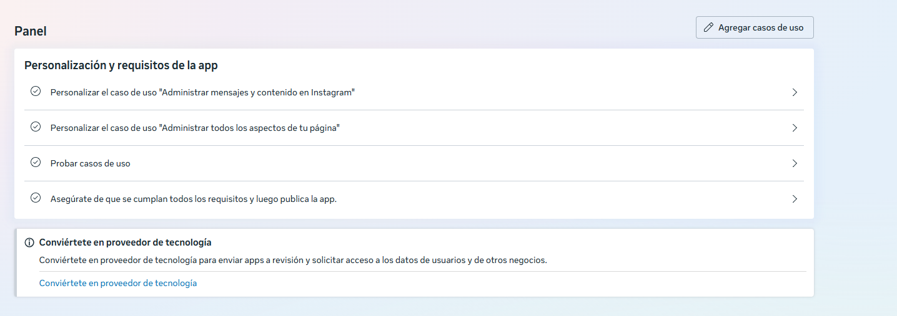
Parte 5. Darle permisos a la app¶
Los permisos dicen qué puede hacer la app. Los agregamos uno por uno.
5.1 Permisos de la página¶
- En el Panel toca "Personalizar el caso de uso 'Administrar todos los aspectos de tu página'".
- Ves una lista. Busca estos y toca "Agregar" en cada uno:
- pages_show_list: ver la lista de tus páginas.
- pages_read_engagement: leer lo que publican tus páginas y sus números.
- business_management: ver tus portfolios.
- pages_manage_posts: publicar (se usa más adelante; agregarlo ahora ahorra un paso).
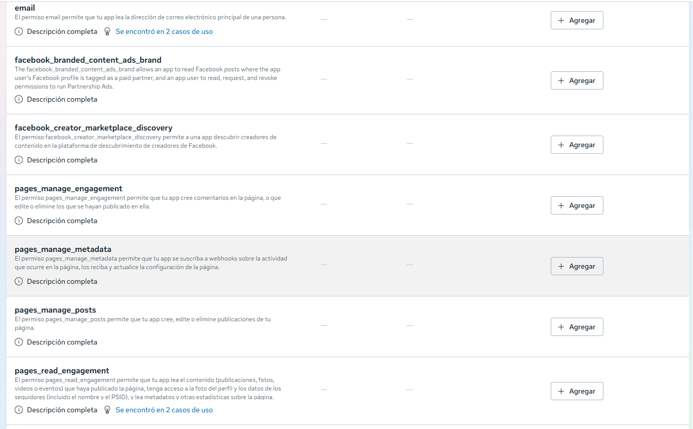
Si aparece un aviso que dice que otros casos de uso "se verán afectados", está bien: toca "Agregar".
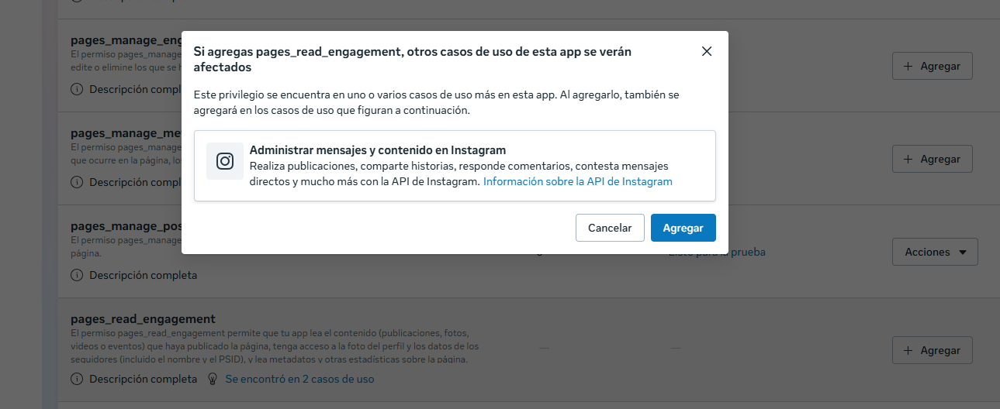
Cuando un permiso queda listo, dice "Listo para la prueba":
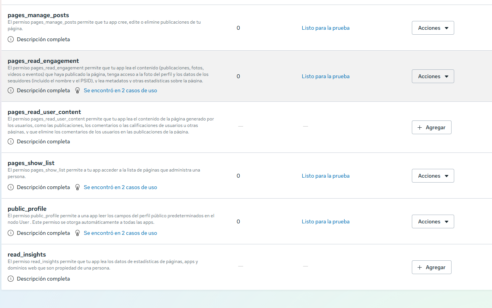
5.2 Permisos de Instagram y de anuncios¶
- Arriba a la izquierda, en el menú que dice "Administrar páginas", cambia a Instagram (o vuelve al Panel y entra a "Personalizar" el caso de Instagram).
- Toca "Agregar" en estos tres:
- instagram_basic: ver tu cuenta de Instagram.
- instagram_content_publish: publicar en Instagram (se usa más adelante).
- ads_read: ver tus cuentas de anuncios y tus píxeles.
Ojo: hay dos tipos de permisos de Instagram que se parecen. Usa los que no dicen "business" (por ejemplo,
instagram_basic, noinstagram_business_basic).
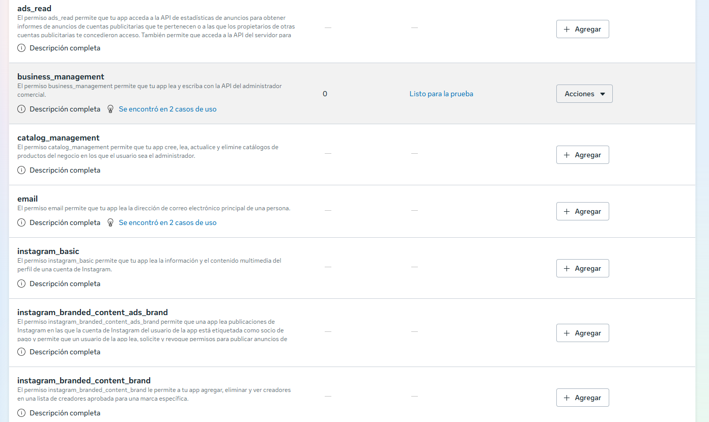
Así se ven cuando ya están listos:
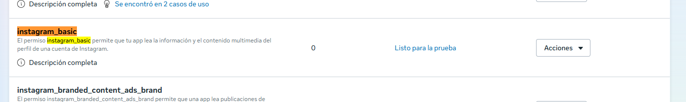
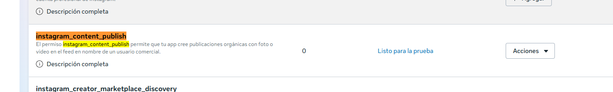
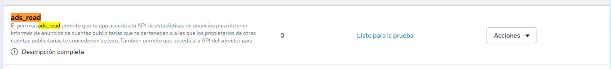
Si te abre una pestaña llamada "API setup with Unified login", no es esa. A la izquierda toca "Permisos y funciones".
Parte 6. La dirección de vuelta¶
Cuando conectes, Facebook te devuelve a la app. Hay que decirle a qué dirección.
Paso 6.1. En el menú de la izquierda busca "Inicio de sesión con Facebook para empresas" y toca la flechita para abrirlo.
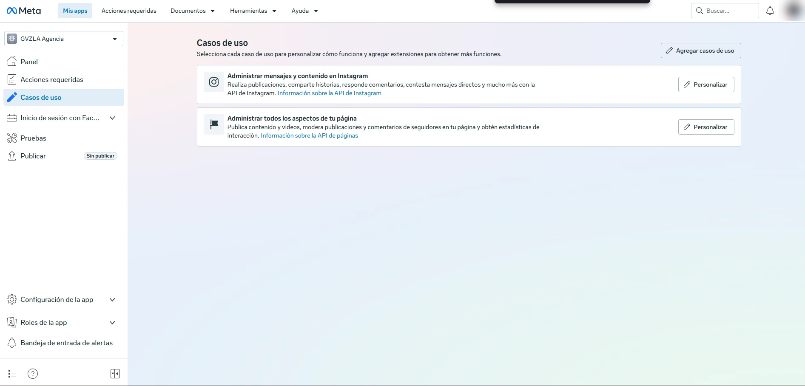
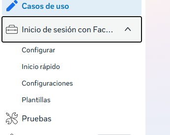
Paso 6.2. Toca "Configurar". En el cuadro "URI de redireccionamiento de OAuth válidos" pega la dirección que te da la app (te la pasa quien instala la herramienta). Tiene esta forma:
https://TU-APP.com/api/conexiones/meta/callback
Aprieta Enter, baja hasta el final y toca "Guardar cambios".
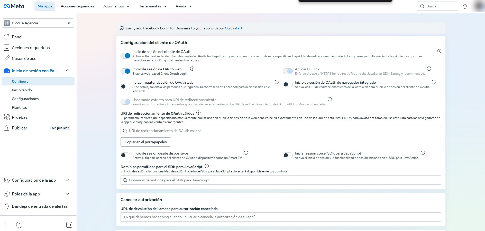
Parte 7. La "configuración" de inicio de sesión¶
Las apps nuevas de Facebook piden una "configuración": una lista guardada de lo que la app le va a pedir a la persona que conecta.
Paso 7.1. En el mismo menú, toca "Configuraciones" y después "Crear configuración". Ponle un nombre (por ejemplo, "Lectura") y toca Siguiente.
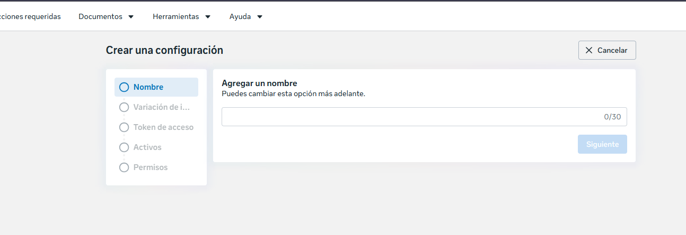
Paso 7.2. En "Variación de inicio de sesión" deja "General" y toca Next.
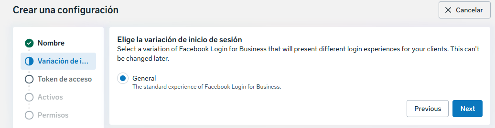
Paso 7.3. En "Token de acceso" marca "Token de acceso de usuario" (la primera opción). Es la que deja ver todos tus portfolios juntos. Toca Siguiente.
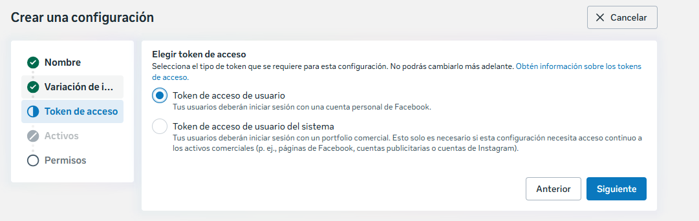
Paso 7.4. Abre "Seleccionar permisos".
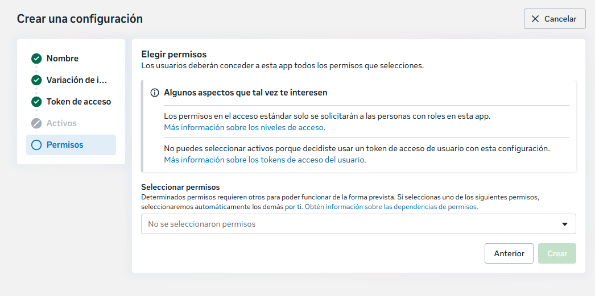
Marca solo estos cinco: ads_read, business_management, instagram_basic, pages_read_engagement y pages_show_list. No marques los de publicar todavía.
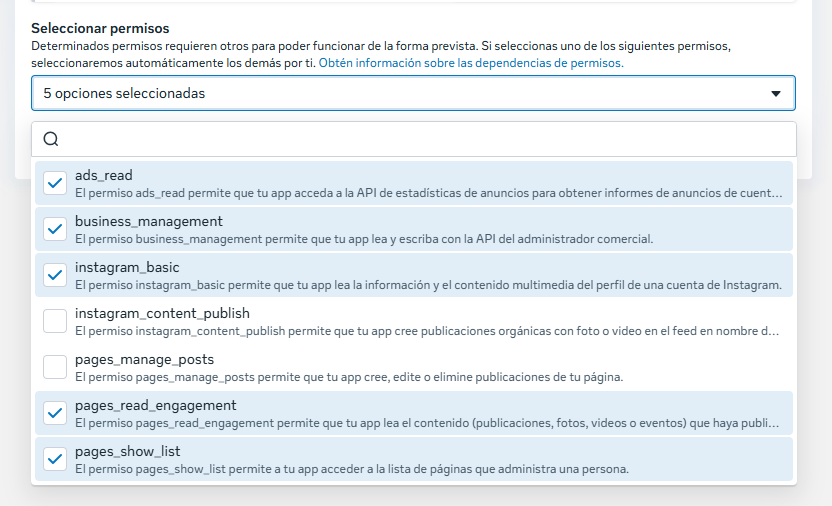
Paso 7.5. Toca "Crear". Aparece el identificador de configuración (un número largo). Cópialo y pásaselo a quien instala la herramienta. Este número no es secreto.
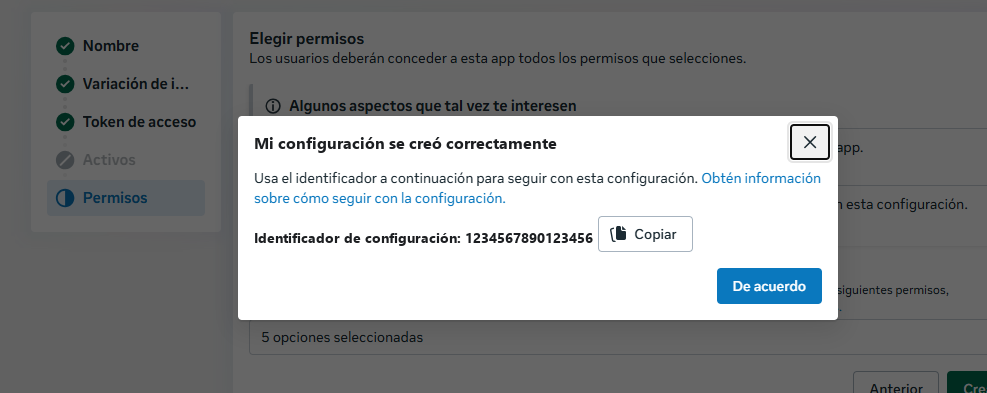
Parte 8. La clave secreta (con cuidado)¶
La app tiene una clave secreta. Es como la llave de tu casa: nunca la mandes por WhatsApp, correo ni chat, y nunca la pegues en una página que no conoces.
- En la app, a la izquierda, toca "Configuración de la app" y después "Básica".
- Ahí ves el "Identificador de la app" (ese número sí puedes pasarlo) y la "Clave secreta de la app".
- Toca "Mostrar" en la clave secreta (te pide tu contraseña de Facebook) y cópiala.
- Pégala solo donde te indique la persona que instala la herramienta, en el servidor y en el momento. Mientras la pegas no se ve nada: es a propósito.
Consejo: copia la clave antes de que te abran el lugar donde pegarla. Si ese lugar queda esperando mucho rato, se cierra solo y hay que volver a abrirlo.
Parte 9. Conectar desde la app¶
Paso 9.1. Entra a la app y abre Conexiones. Baja hasta "Servicios". Antes de conectar, la tarjeta de Meta se ve así:
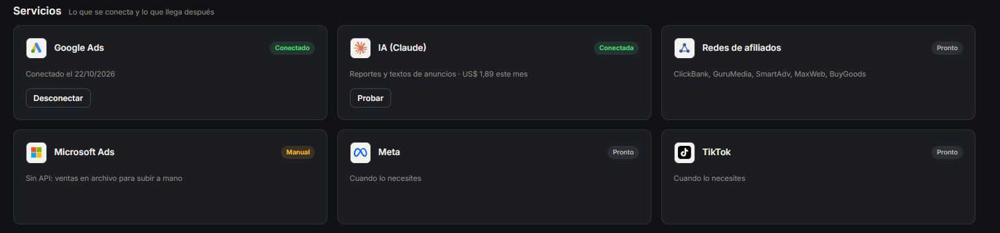
Paso 9.2. En la tarjeta Meta toca "Conectar Meta". Se abre una ventana de Facebook. En cada pantalla deja marcado "todos los actuales y futuros" y toca Continuar:
Páginas:
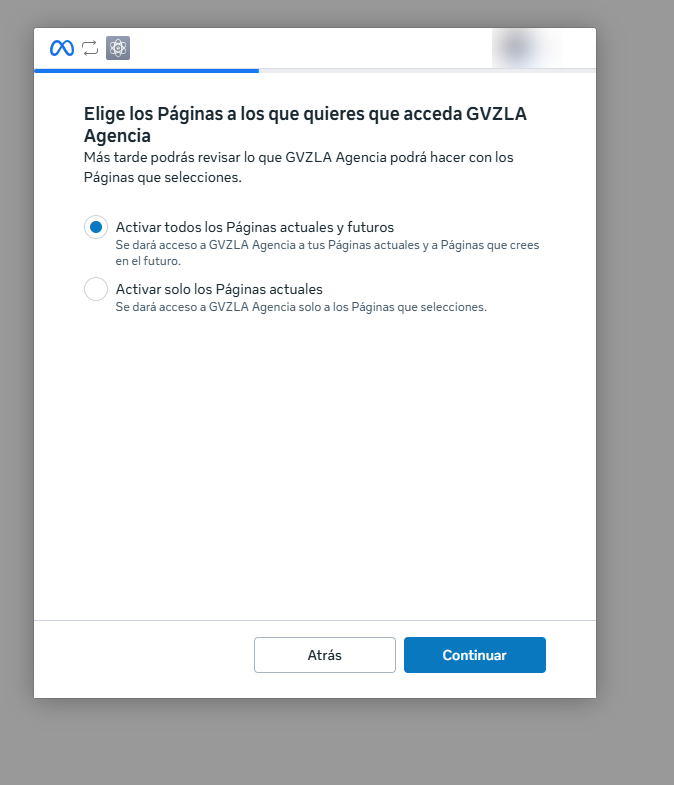
Negocios (portfolios):
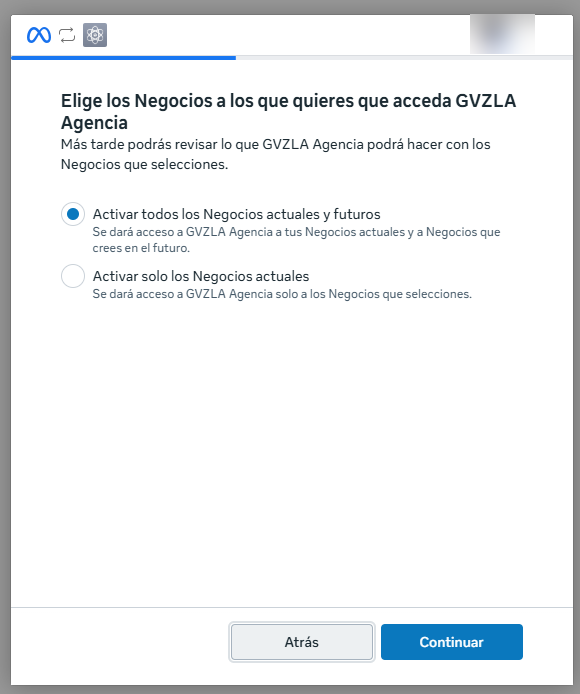
Instagram:
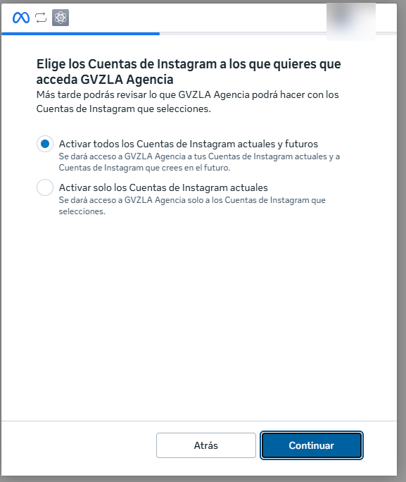
Paso 9.3. Facebook te muestra un resumen de lo que la app va a poder ver. Toca "Guardar".
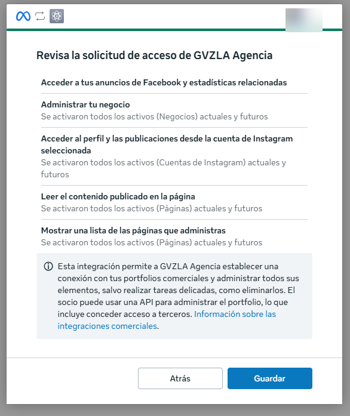
Paso 9.4. Listo. Toca "De acuerdo".
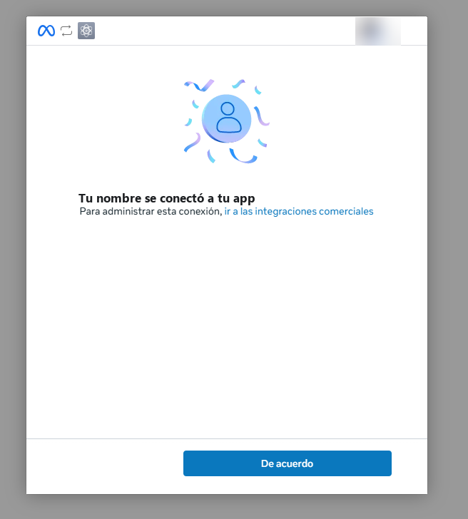
Paso 9.5. Vuelves a la app y ves todo tu Facebook, cada cosa en su propia tabla: portfolios (BM), páginas, Instagram, cuentas de anuncios y píxeles. Arriba de cada tabla dice cuántas están activas.
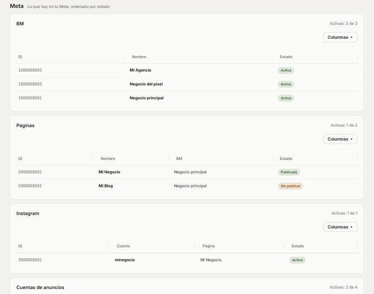
Las tablas están ordenadas por estado: primero las activas, después las que tienen algún problema (por ejemplo, "Pago pendiente") y al final las bloqueadas.
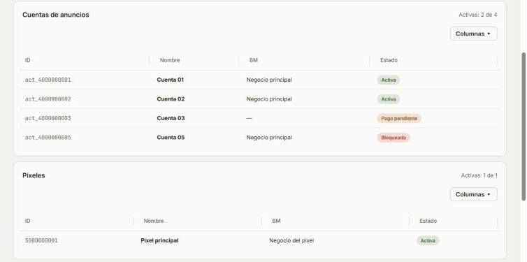
La tarjeta de Meta ahora dice "Conectado", con quién la conectó y cuándo:
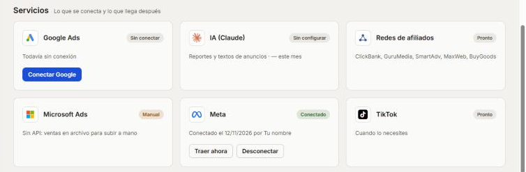
- Traer ahora: vuelve a leer tu Facebook en el momento. La app también lo lee sola cada mañana.
- Desconectar: corta la conexión. Lo que ya se leyó no se borra.
Cada 60 días¶
Facebook da la conexión por 60 días. Una semana antes, la app te avisa: "La conexión con Meta vence el …". Toca "Reconectar" y repite la Parte 9 (son dos minutos).
Si algo sale mal¶
| Lo que ves | Qué hacer |
|---|---|
| Al tocar "Conectar Meta", Facebook dice que algo no está bien configurado | Revisa la Parte 6 (la dirección de vuelta, exacta y guardada) y que quien instala tenga el número de la Parte 7. |
| En una tabla dice "Meta no dio permiso para leer esto" | Falta un permiso: revisa la Parte 5 y la Parte 7 (los cinco permisos). Después, en la app, "Reconectar". |
| La tarjeta dice "Cortada" | La conexión venció o la quitaste en Facebook. Toca "Reconectar". |
| Un portfolio o una página no aparece | En la Parte 9 no quedó marcado. Toca "Reconectar" y elige "todos los actuales y futuros". Si la página es de otra persona que te dio acceso, quizá no aparezca su portfolio: es normal. |
| "Falta poner los datos de la app de Meta en el servidor" | Falta la Parte 8 o el número de la Parte 7: avísale a quien instala la herramienta. |
Lo que esta conexión no hace (todavía)¶
- No publica en tus páginas ni en Instagram.
- No crea ni cambia anuncios.
- No toca nada de tu Facebook: solo mira.
Para trabajar con páginas de clientes, Facebook pide además verificar tu negocio (con documentos) y pasar una revisión de la app. Eso es otra guía.